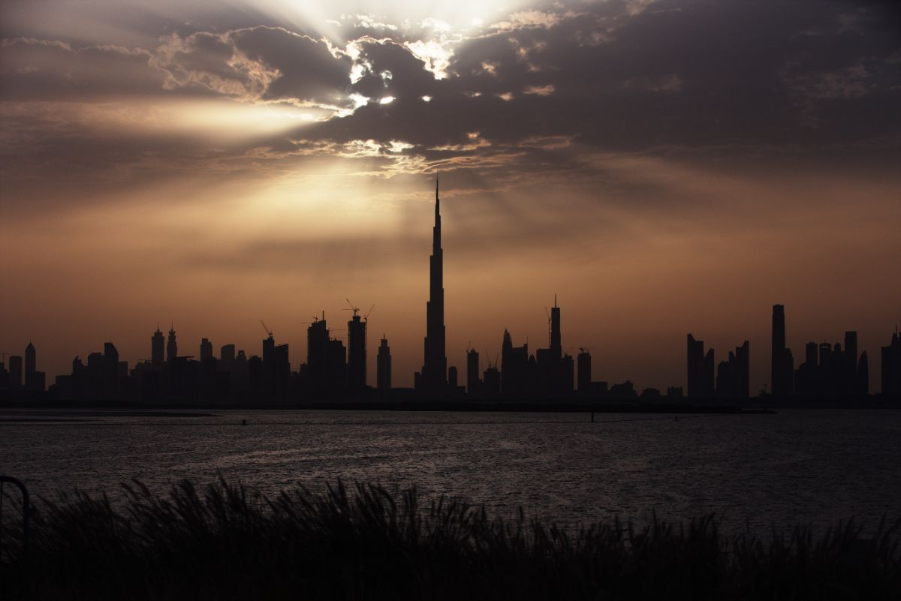
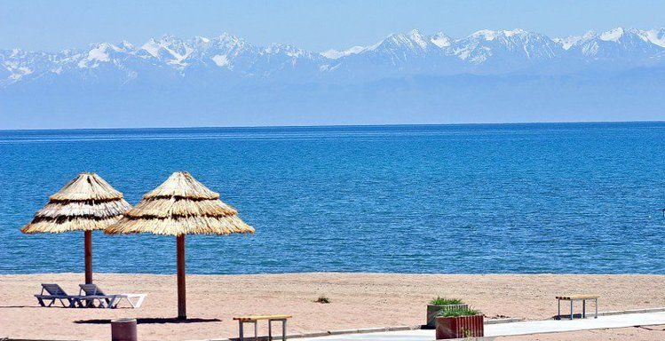

Rang palitrasi
Quvnoq, yozgi kayfiyat: okean ko'ki ishonch beradi, quyosh sarig'i asosiy harakatlarga e'tibor tortadi, osmon foni kulrang o'rnida sahifani yengillashtiradi.
Ko'rib chiqilgan variantlar

 ★ TOPSanasi bor
Ozarbayjon — «7 mo'jiza»
$720Batafsil →
★ TOPSanasi bor
Ozarbayjon — «7 mo'jiza»
$720Batafsil →

So'rov bo'yicha Issiq-Ko'l — tog' dengizi $470Batafsil →Okean
TanlandiYorqin okean ko'ki va quyosh sarig'i. Eng ochiq va quvnoq variant — plyaj, kruiz va yozgi turlarga mos; ishonch hissini ko'k rang saqlaydi.
★ TOPSanasi bor
Ozarbayjon — «7 mo'jiza»
$720Batafsil →
So'rov bo'yicha
Issiq-Ko'l — tog' dengizi
$470Batafsil →
Firuza
Firuza va marjon, qumli fon ustida. Iliq kurort kayfiyati, Samarqand koshinlarini ham eslatadi. Raqobatchilar orasida eng ajralib turadigan variant.
★ TOPSanasi bor
Ozarbayjon — «7 mo'jiza»
$720Batafsil →
So'rov bo'yicha
Issiq-Ko'l — tog' dengizi
$470Batafsil →
Yorug' tun
To'q tun saqlanadi, lekin kulrang platina o'rniga iliq fil suyagi, oltin esa yorqinroq amberga almashadi. Eng kam o'zgarish — premium hissi qoladi.
RAVON TRAVEL
Logotip, rang va grafik elementlar — saytdan tortib vizitka va vaucherlargacha bir xil, tanib olinadigan ko'rinish uchun.
Silliq, bir maromda, to'siqsiz kechadigan.
«Yo'lingiz ravon bo'lsin» — o'zbekcha oq yo'l tilagi.
Har sayohat — yangi tong
Belgida to'lqin ustidan quyosh chiqmoqda: ufq — manzil, to'lqinlar — yo'lning ravon, bir maromdagi harakati. Doira shakli muhr va emblemani eslatadi — ishonch belgisi.
Uchta yo'nalish
Tanlandi: 1b — saytning barcha sahifalariga qo'yildi.
Ravon yo'l — monogramma
R harfining oyog'i silliq yo'lga aylanib, oltin nuqtada — manzilda tugaydi.
Ufq — emblema
To'lqin ustidan chiqayotgan quyosh. Doira shakli ijtimoiy tarmoq avatari va muhrda o'z-o'zidan ishlaydi.
Nuqta — shrift belgisi
Shriftli R va sariq nuqta. Eng minimal, lekin shriftga bog'liq.
Kompozitsiya, rang va o'lcham
Kompozitsiyalar
Rang variantlari
Konstruksiya, himoya maydoni, minimal o'lcham
Ravon to'lqini va shior
Ravon to'lqini
Emblemadagi to'lqindan olingan. Sarlavha belgisi, marshrut chizig'i va bo'lim ajratkichi sifatida ishlatiladi — saytda boshqa bezak kerak emas.
Yo'lingiz ravon bo'lsin.